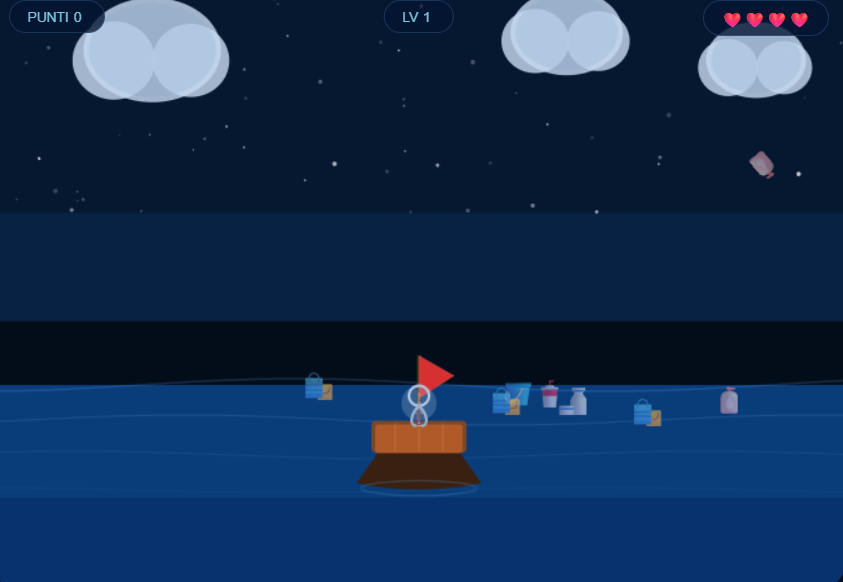

Portfolio
Gabriele
Antinolfi
Studente di Informatica al terzo anno. Appassionato di moto e di calcio.
Chi sono
Informazioni personali
Mi chiamo Gabriele Antinolfi, ho 18 anni e frequento il terzo anno dell'indirizzo Informatica. Sono curioso, mi piace risolvere problemi e imparare cose nuove. Nel tempo libero mi piace andare in moto e giocare a calcio.
Competenze
Cosa so fare
Le competenze tecniche acquisite durante l'anno scolastico.
HTML / CSS
Base
Python
Base / Intermedio
WordPress
Intermedio
Hardware
Avanzato
Sistemi operativi
Base
Progetti
Gioco
I progetti sviluppati durante l'anno scolastico.

Gioco Con AI
Gioco sviluppato per sensibilizzare il tema dell'inquinamento della plastica. Il personaggio deve cercare di raccogliere più plastica possibile.

Sito WordPress con Divi
Sito dedicato alla casa di moto Yamaha, realizzato con WordPress e il builder Divi.
Curriculum Vitae
Il mio CV
Formazione, esperienze e competenze in formato sintetico.
Formazione
Operatore Informatico
Immaginazione e Lavoro — MilanoCorso triennale ad indirizzo Informatica. Programmazione Python, web design, Arduino, reti e sistemi operativi.
Licenza Media
IC Renzo Pezzani (Martinengo) — MilanoVotazione: 7/10.
Esperienze
Stage
Tech Fix Store — MilanoSmontaggio e riparazioni computer e telefoni.
Competenze tecniche
Lingue
Madrelingua
Livello B1 — scolastico
Contatti
Dove trovarmi
Puoi contattarmi tramite email o trovare i miei lavori online.